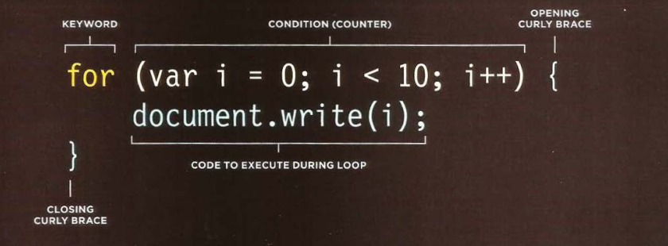

Laço repetição FOR
Sobre laços de repetição FOR
Eles funcionam como um código que repete a mesma instrução várias vezes
O melhor de tudo, é que você pode escolher quantas vezes baseados no contexto
Executamos for toda vez que precisamos de agilidade para tarefas repetitivas e percorrer elementos como arrays, objetos (por exemplo).
Que tal praticar?
Crie uma função chamada forAninhado() que receberá como parâmetro um vetor. Este vetor deve ter sub-vetores, com valores que variam entre ímpar e par. Com o laço de repetição FOR que irá percorrer este vetor com seus sub-vetores e irá buscar os valores pares. Os valores pares devem ser adicionados em um novo vetor, e você deverá retornar este novo vetor.